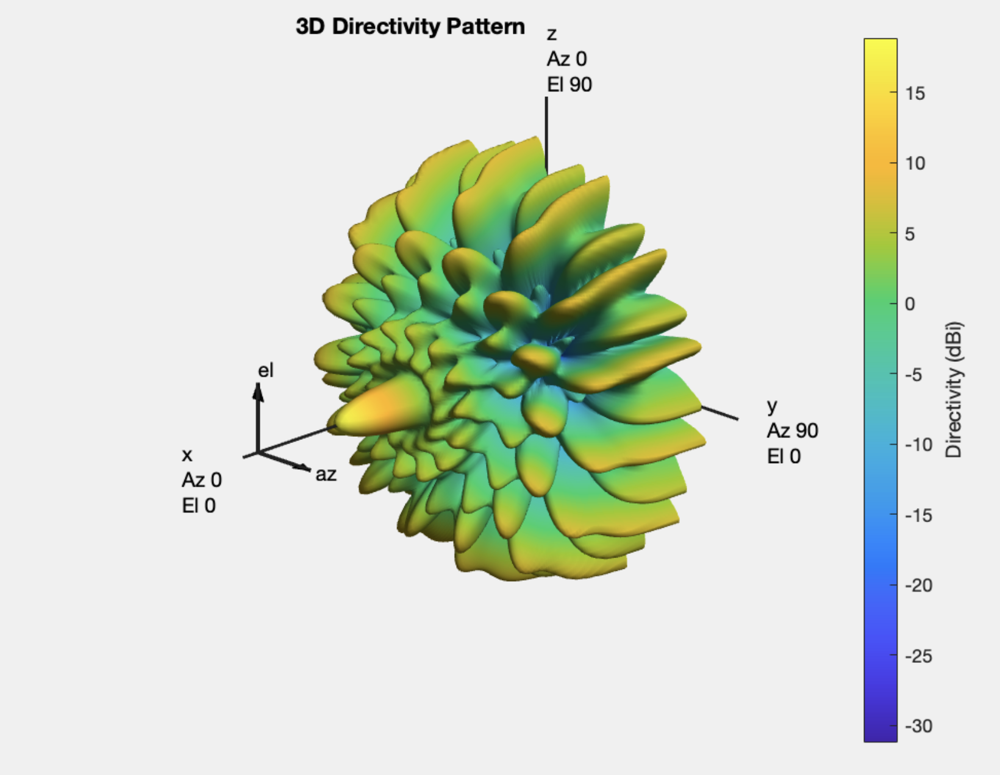
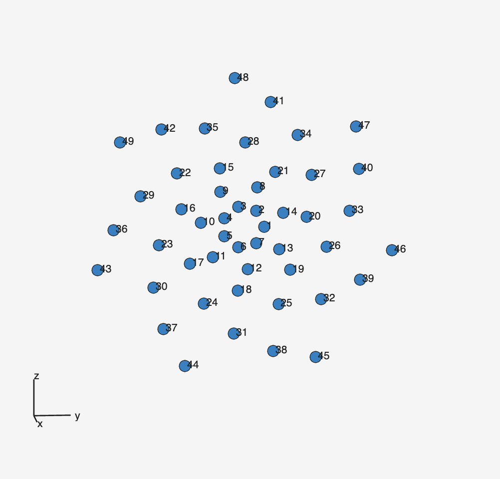

In August 2024, I started work on a mic array which built off the success of an existing project from the lab called “Ultra-Mic”. I started working on simulating different array geometries and evaluating their qualities. I also wrote a program to visualize the reactivity pattern of a particular array across a range of frequencies. The program allows the user to vary the rotation of the array arms, the number of arms, and the max and min frequencies the simulation is run over. This project taught me the importance of persistence and tenacity in iterative design. On multiple occasions we thought we had found a solution only to discover new challenges.